# scatterplot
plot(x, y)
## Scatterplot Matrices
pairs(dataframe_with_numerical_variables)
# linegraph
plot(x, y, type="l")
## Add another line to the plot
lines(x, z)
# histogram
hist(x)
# boxplot
boxplot(y)
boxplot(y ~ x)
# barplot of variable x
counts=table(x)
barplot(counts)Functions for Base R Graphics
Data Visualization in R
R is nowadays equipped with two independent (incompatible, yet coexisting) systems for graphics generation:
- Traditional System – base graphics
- Built-in functionality for creating charts and graphs in R.
- Easier to learn and use.
- Introduced in this lecture.
- Newer System – grid
- ggplot2 – an open-source data visualization package.
- Very flexible and gaining popularity rapidly nowadays.
- Discussed later in this class.
Five Basic Graphs and Summary
R offers several basic graph types, which can be created using its built-in functions. Some of the fundamental graph types in R are scatter plot, line graph (i.e. line plot), histogram, bar plot, box plot, pie chart, dot chart, density plot, etc.
We introduce the five basic graphs below with the code summary.
- scatterplot
- linegraph
- histogram
- boxplot
- barplot
Options to Customize the Chart Appearance
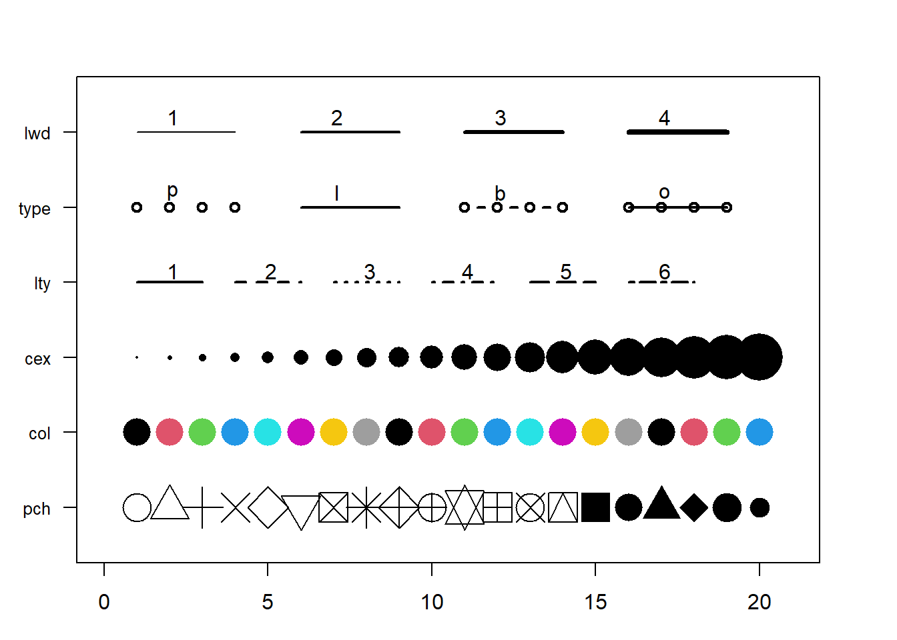
lwd\(\rightarrow\) line widthtype\(\rightarrow\) line between dots (points only, line only, lines connecting points, lines overlaying points) [default is points only]lty\(\rightarrow\) line type [default is solid line]cex\(\rightarrow\) shape sizecol\(\rightarrow\) control colors (you can usecol = 1,col = 2,col = 3, etc., orcol = "black",col = "red",col = "green", etc. Thecolors()function gives you a vector of colors by name) [default color is “black” or1]pch\(\rightarrow\) marker shape [default is open circle]- The information above is sourced from https://r-graph-gallery.com/6-graph-parameters-reminder.html
A Few Key Global Parameters
main: add a title to the plotxlab: add a label for the \(x\) axisylab: add a label for the \(y\) axispar()function: used to specify the global graphics parameters that affect all plots in an R session.par(mar = c(bottom, left, top, right)): adjust the size of the margins. By defaultmar = c(5.1, 4.1, 4.1, 2.1).par(mfrow = c(num_rows, num_cols)): split the plotting area in several panels row-wise filling. For example,par(mfrow=c(3, 2))split the plotting area in 3 rows, 2 columns (row-wise filling)par(mfcol = c(num_rows, num_cols)): split the plotting area in several panels column-wise filling.
Base R Graphics – scatterplot – Example
Function: plot(x,y)
Example: Draw scatterplot of wind vs pressure of the data set storms (in the tidyverse package).
# Data preparation
library(tidyverse)
data(storms) # data frame in tidyverse package
str(storms)
#> tibble [19,537 × 13] (S3: tbl_df/tbl/data.frame)
#> $ name : chr [1:19537] "Amy" "Amy" "Amy" "Amy" ...
#> $ year : num [1:19537] 1975 1975 1975 1975 1975 ...
#> $ month : num [1:19537] 6 6 6 6 6 6 6 6 6 6 ...
#> $ day : int [1:19537] 27 27 27 27 28 28 28 28 29 29 ...
#> $ hour : num [1:19537] 0 6 12 18 0 6 12 18 0 6 ...
#> $ lat : num [1:19537] 27.5 28.5 29.5 30.5 31.5 32.4 33.3 34 34.4 34 ...
#> $ long : num [1:19537] -79 -79 -79 -79 -78.8 -78.7 -78 -77 -75.8 -74.8 ...
#> $ status : Factor w/ 9 levels "disturbance",..: 7 7 7 7 7 7 7 7 8 8 ...
#> $ category : num [1:19537] NA NA NA NA NA NA NA NA NA NA ...
#> $ wind : int [1:19537] 25 25 25 25 25 25 25 30 35 40 ...
#> $ pressure : int [1:19537] 1013 1013 1013 1013 1012 1012 1011 1006 1004 1002 ...
#> $ tropicalstorm_force_diameter: int [1:19537] NA NA NA NA NA NA NA NA NA NA ...
#> $ hurricane_force_diameter : int [1:19537] NA NA NA NA NA NA NA NA NA NA ...
storms[6923, "category"]=0 #Fixed one error value
storms$category = as.factor(storms$category)# Plot scatter plot with x = pressure, y = wind
plot(storms$pressure, storms$wind)
### attach function -- access the variables w/o calling the data frame
attach(storms)
plot(pressure, wind)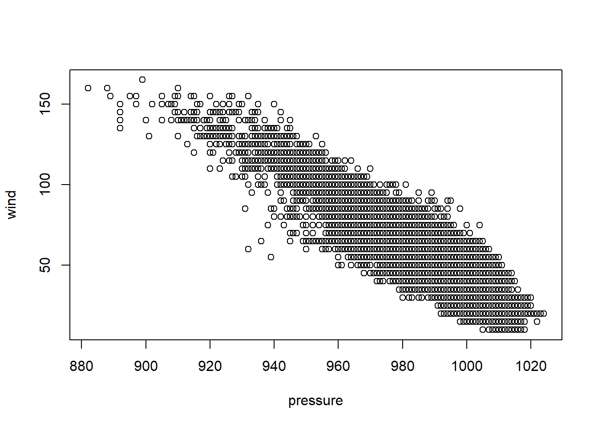
plot(pressure, wind,
col = "blue",
main = "Scatterplot of Wind vs Pressure") 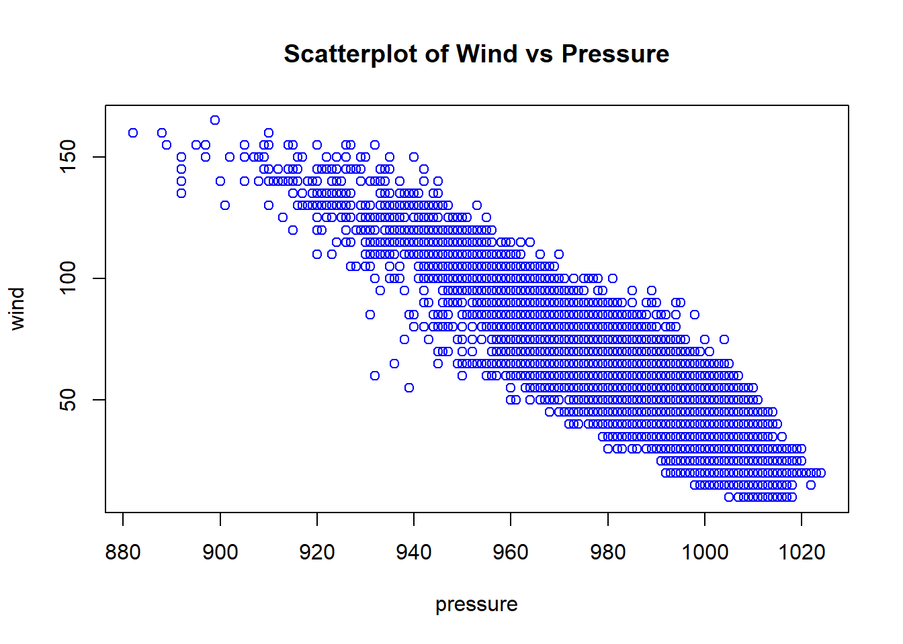
Base R Graphics – scatterplot matrices – Example
Function: pairs(df)
Example: Draw scatterplot matrix of first 4 variables of the data frame iris (in the datasets package).
library(datasets)
data(iris)
head(iris)
#> Sepal.Length Sepal.Width Petal.Length Petal.Width Species
#> 1 5.1 3.5 1.4 0.2 setosa
#> 2 4.9 3.0 1.4 0.2 setosa
#> 3 4.7 3.2 1.3 0.2 setosa
#> 4 4.6 3.1 1.5 0.2 setosa
#> 5 5.0 3.6 1.4 0.2 setosa
#> 6 5.4 3.9 1.7 0.4 setosa
pairs(iris[,1:4], pch=19) # pch = 19 is solid circle.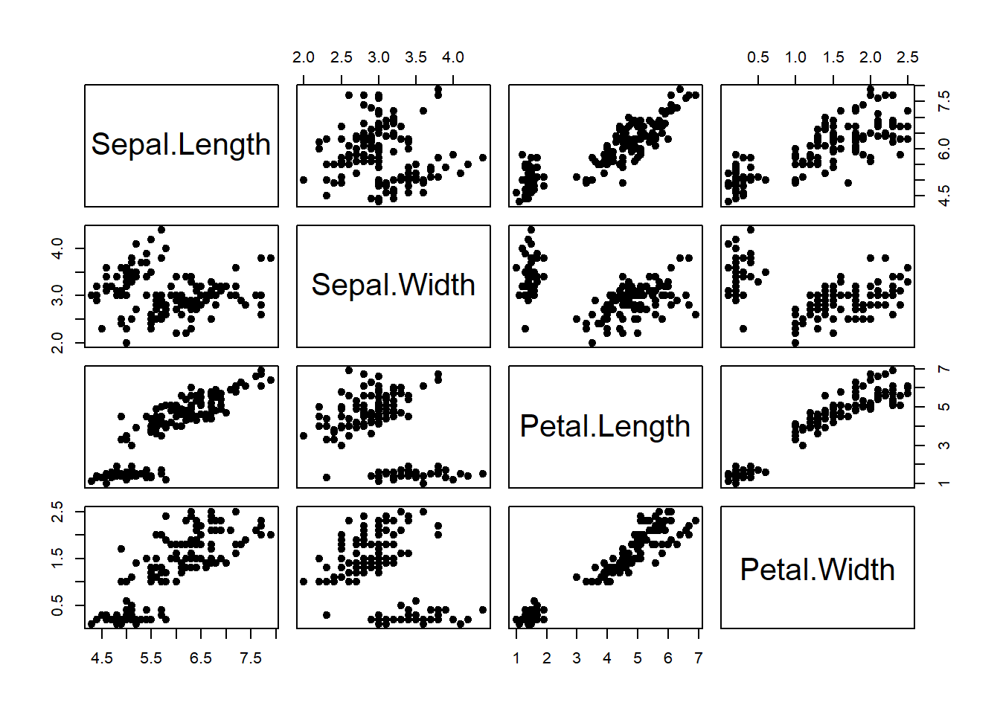
Base R Graphics – linegraph – Example
Function: plot(x, y, type = ‘l’)
Example: From https://trends.google.com/, we downloaded the time series data set GoogleTrendDataScience.csv with three variables Month_Since_2004, DataScience, MachineLearning.
Draw a linegraph of the Data Science search counts vs Month.
Use type = “b” to draw a line plot with dots.
ds = read.csv("GoogleTrendDataScience.csv")
head(ds)
#> Month_Since_2004 DataScience MachineLearning
#> 1 1 12 16
#> 2 2 10 14
#> 3 3 7 12
#> 4 4 7 16
#> 5 5 5 14
#> 6 6 7 11
par(mfrow=c(1,2)) # 1 row, 2 columns (row-wise filling)
plot(ds$Month_Since_2004, ds$DataScience, type="l",
main = "Line Plot for Data Science",
xlab = "Number of Months Since 2004",
ylab = "Data Science Search Counts") # type="l" represents lines
### Plot with points and line
plot(ds$Month_Since_2004, ds$DataScience, type="b", # type="b" represents both
main = "Line and Point Plot for Data Science",
xlab = "Number of Months Since 2004",
ylab = "Data Science Search Counts") 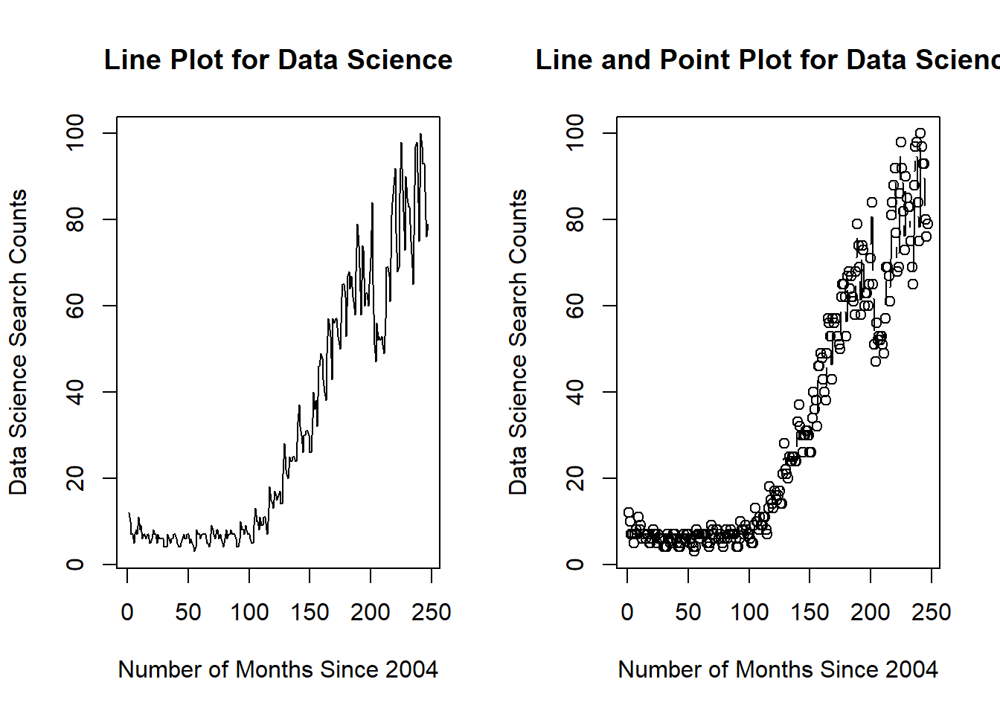
par(mfrow=c(1,1)) # reset to defaultBase R Graphics – Multiple linegraphs – Example
Function: plot(x, y, type = ‘l’), lines(x, z)
Example: We could place multiple linegraphs on one plot. Draw two linegraphs (DataScience vs Month_Since_2004, MachineLearning vs Month_Since_2004) on a single plot.
plot(ds$Month_Since_2004, ds$DataScience, type="l", col="red")
lines(ds$Month_Since_2004, ds$MachineLearning, col="blue")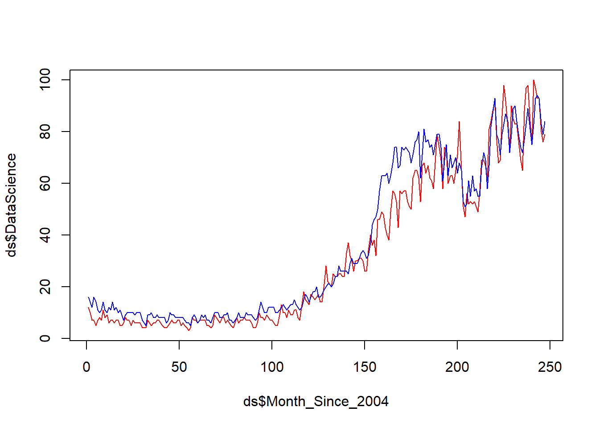
Base R Graphics – histogram – Example
Function: hist(x)
Example: Draw histogram of variable Sepal.Width in the data frame iris (in the datasets package).
data(iris)
hist(iris$Sepal.Width)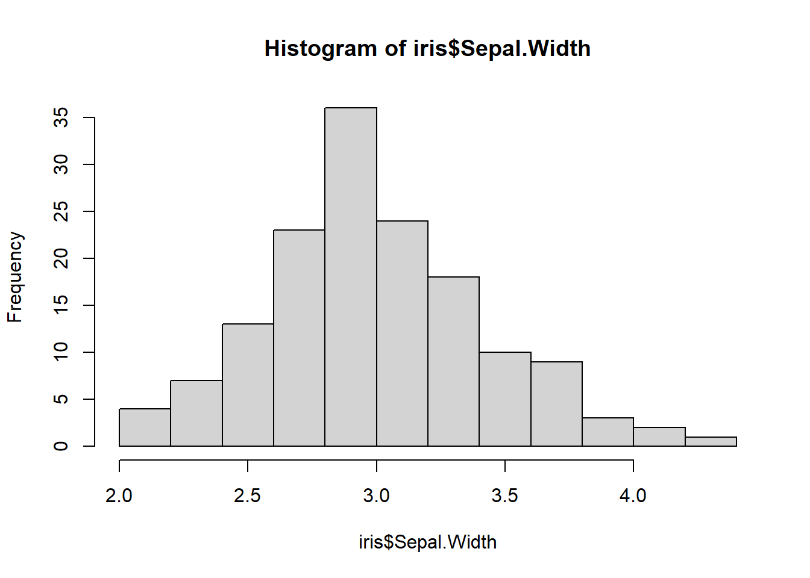
Base R Graphics – histogram matrices – Example
Function: library(Hmisc), hist.data.frame(df)
library(Hmisc)
hist.data.frame(iris[,1:4])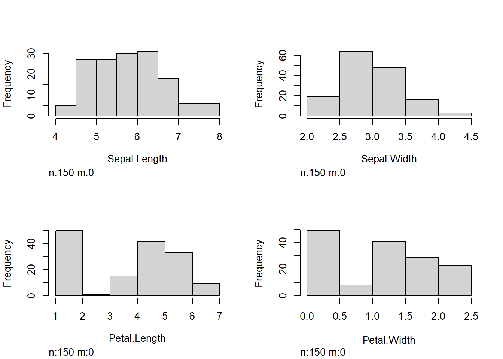
Base R Graphics – boxplot – Example
Functions: boxplot(y), boxplot(y~x)
Example:
Draw a boxplot of the variable
windin the data framestorms(in the tidyverse package).Draw a boxplot of
windvscategoryof the data framestorms.
par(mfrow=c(2,2)) # Arrange the plots in 2*2 graphical matrix
### (a) boxplot of wind
boxplot(storms$wind, main = "(a) Vertical")
boxplot(storms$wind, horizontal = TRUE, main = "(a) Horizontal")
### (b) boxplot of wind over levels of category
### vertical boxplot by default
boxplot(wind ~ category, data = storms, main = "(b) Vertical")
### horizontal boxplot
boxplot(wind ~ category, data = storms, horizontal = TRUE, main = "(b) Horizontal")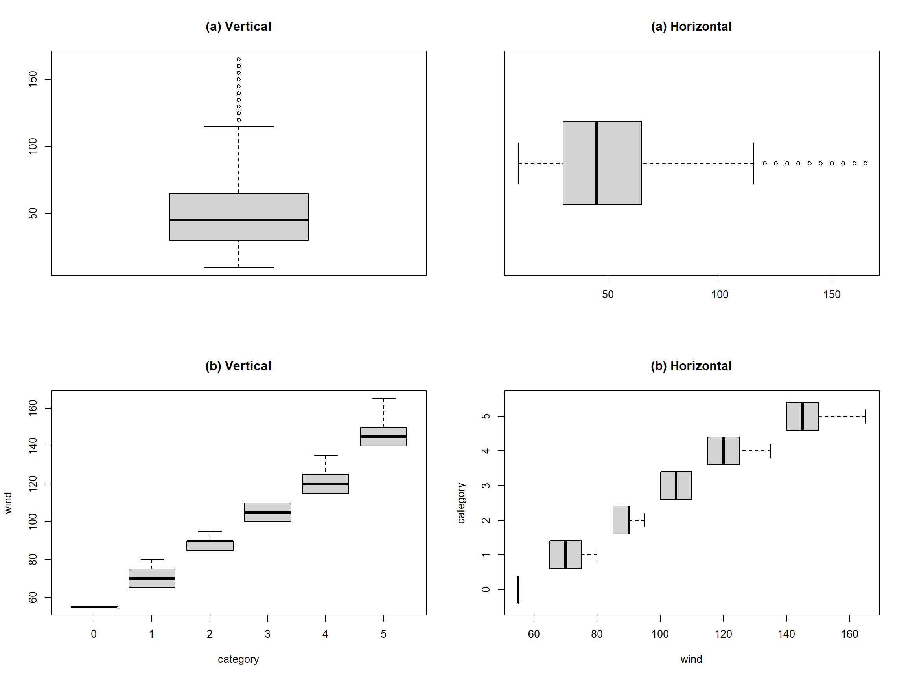
par(mfrow=c(1,1))Base R Graphics – barplot – Example
Functions: counts=table(), barplot(counts)
Example: In the storms dataset,
Draw a barplot of variable
status.Draw a barplot of variable of
statusandcategory.
### (a) Barplot
counts = table(storms$status)
counts
#>
#> disturbance extratropical hurricane
#> 171 2151 4803
#> other low subtropical depression subtropical storm
#> 1453 151 298
#> tropical depression tropical storm tropical wave
#> 3569 6830 111
barplot(counts)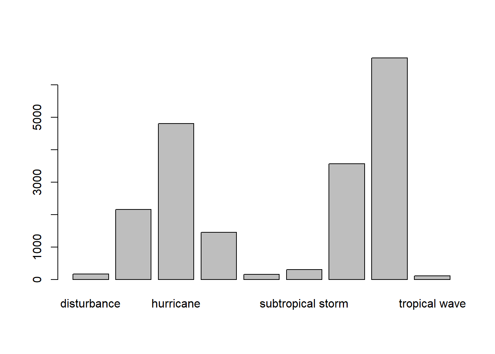
# Sort the data and run a new plot from lowest to highest
counts_asc <- sort(counts, decreasing = FALSE)
barplot(counts_asc)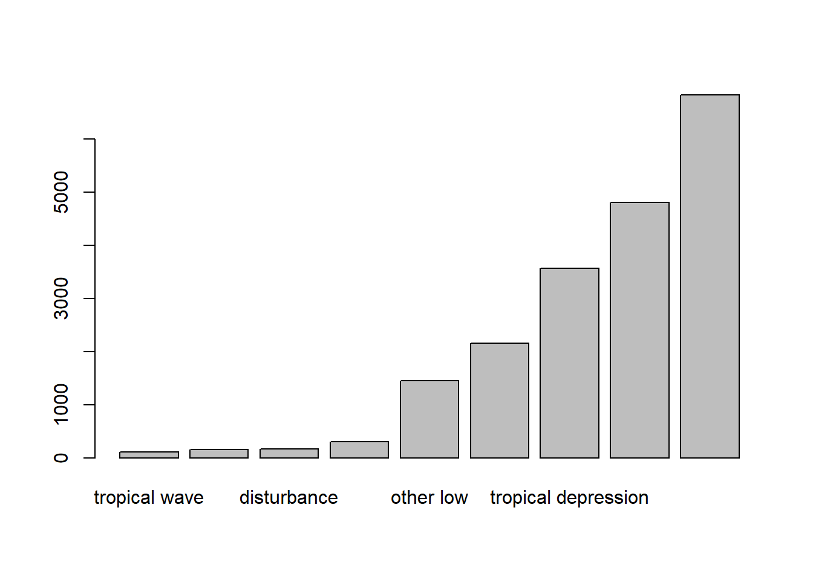
# Horizontal barplot
barplot(counts, horiz=TRUE)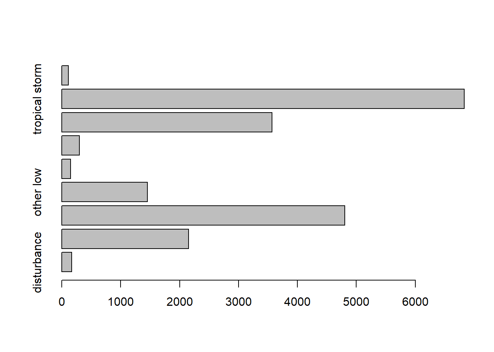
### (b) Barplot of two variables
counts = table(storms$category, storms$status)
counts
#>
#> disturbance extratropical hurricane other low subtropical depression
#> 0 0 0 0 0 0
#> 1 0 0 2548 0 0
#> 2 0 0 993 0 0
#> 3 0 0 593 0 0
#> 4 0 0 553 0 0
#> 5 0 0 116 0 0
#>
#> subtropical storm tropical depression tropical storm tropical wave
#> 0 0 0 1 0
#> 1 0 0 0 0
#> 2 0 0 0 0
#> 3 0 0 0 0
#> 4 0 0 0 0
#> 5 0 0 0 0
barplot(counts, col= c("steelblue", "firebrick", "lightblue", "mistyrose", "lightcyan",
"lavender", "cornsilk"), besid=TRUE, legend = rownames(counts),
args.legend=list(title="Category"))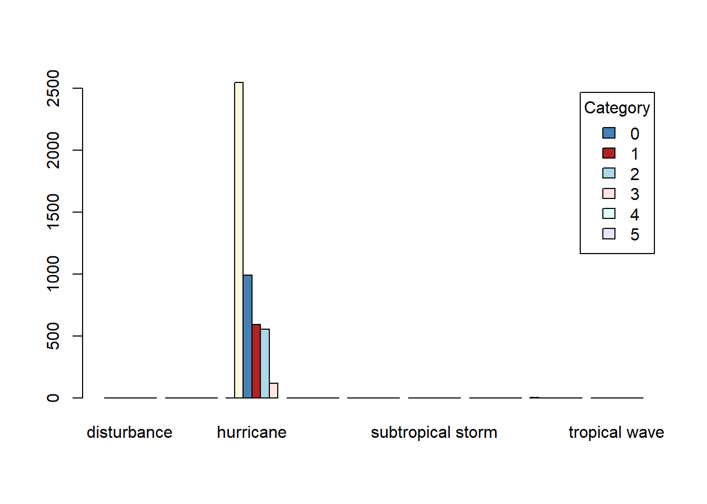
categoryvariable instormsrepresents the Saffir-Simpson storm category (range from 1 to 5), which the scale based only on a hurricane’s maximum sustained wind speed.